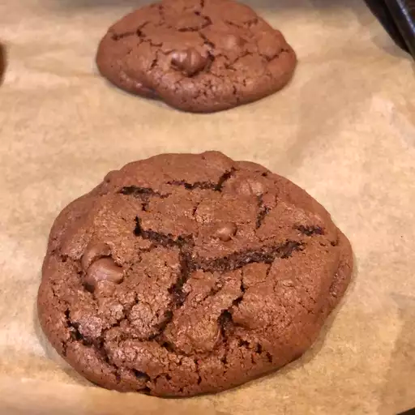

Chocolate Chocolate Chip Cookies

Description
These chocolate chocolate chip cookies are made with cocoa powder and chocolate chips to guarantee chocolaty flavor in every bite.
My kids love them!
You'll find a detailed ingredient list and step-by-step instructions in the recipe below, but let's go over the basics:
Ingredients
- Sugar: The recipe starts with 1 ½ cups white sugar.
- Butter: Beat the sugar with two sticks of softened butter.
- Eggs: Two eggs lend moisture and act as a binding agent, which means they help hold the dough together.
- Vanilla: Vanilla extract enhances the overall flavor of the chocolate chocolate chip cookies.
- Flour: All-purpose flour gives the cookie dough structure.
- Cocoa powder: They wouldn’t be chocolate chocolate chip cookies without cocoa powder!
- Baking soda: Baking soda acts as a leavener, which means it helps the cookies rise.
- Salt: A pinch of salt enhances the overall flavor, but it won’t make the cookies taste salty.
- Chocolate chips: You’ll need two cups of semisweet chocolate chips.
- Walnuts (optional): Walnuts are optional, but they add welcome crunch.
Steps
- Beat the wet ingredients in one bowl and the dry ingredients in another.
- Add the dry mixture to the wet mixture, then stir in the chocolate chips and nuts.
- Drop the dough onto baking sheets.
- Bake in the preheated oven until the cookies are set.